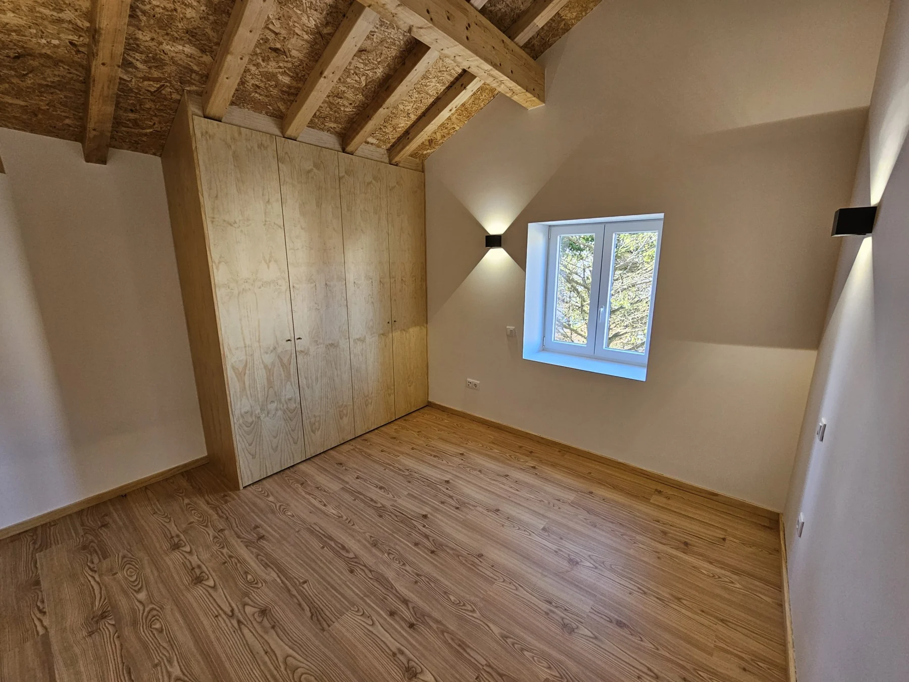
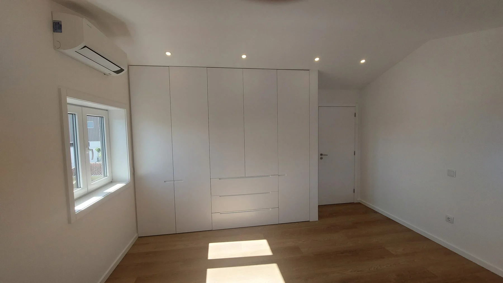

Preparar e aprovar.
Após a orçamentação, os desenhos de preparação e pormenor são articulados com os autores do projeto e sujeitos a aprovação.

Vairão · Vila do Conde · Desde 1988
Do desenho de pormenor à oficina e à montagem em obra. Roupeiros, portas, armários e outras soluções de carpintaria para o seu projeto.
Conhecer os trabalhosA SOECO
Transformamos madeira e os seus derivados em elementos que passam a fazer parte da sua casa.
Fundada por António Soares e António Correia, a SOECO dedica-se à carpintaria desde 1988. A empresa trabalha em construção nova, remodelação e reabilitação, com equipas em oficina e em obra.
Em articulação com os autores do projeto, prepara os desenhos de pormenor de carpintaria. Depois de aprovados, estes orientam a execução e a implementação em obra.

Soluções de carpintaria
O serviço parte das necessidades de utilização e das características do projeto. Conheça as aplicações e as decisões que podem ser preparadas com a equipa.
Ver os serviçosDo projeto à obra
Após a orçamentação, os desenhos de preparação e pormenor são articulados com os autores do projeto e sujeitos a aprovação.
Na oficina, a madeira e os seus derivados são transformados nos elementos de carpintaria.
A montagem em obra concretiza a ligação entre os elementos executados e o projeto aprovado.